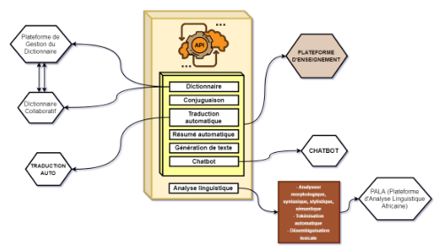
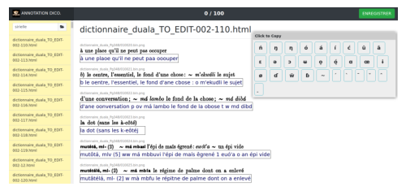
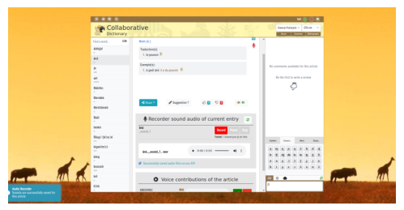
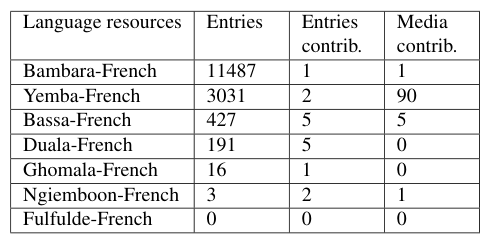

RAIL 2020Traduction automatique
Construction de ressources collaboratives pour les langues africaines dotées : cas de la plateforme NTeALan Dictionaries
Traduction automatique, non relue par un humain. L'article original est la version de référence ; les phrases soulignées sont celles dont les contrôles automatiques n'étaient pas sûrs.
Proceedings of the first workshop on Resources for African Indigenous Languages.
Traduction par Ernst van Gassen (Arktos AI Lab), sous licence CC BY-NC 4.0 comme l'original. Réutilisation permise avec attribution, à usage non commercial uniquement. Les auteurs originaux n'ont pas relu ni approuvé cette traduction.
Texte brut réutilisable, avec sa licence : Français · LICENCE
Affiliations
Elvis MBONING1 2, Daniel BALEBA1, Jean Marc BASSAHAK1,Ornella WANDJI1
NTeALan1, ERTIM (INALCO)2
Tradex Makepe - Douala (Cameroon), 2 rue de Lille - Paris (France)
Adresses e-mail retirées pour la protection de la vie privée. Elles figurent dans le PDF original.
Résumé
Dans un contexte où les ressources et outils open-source de traitement automatique des langues en langues africaines sont rares et dispersés, il est difficile pour les chercheurs d'intégrer véritablement les langues africaines dans les algorithmes actuels d'intelligence artificielle. Créée en 2017, dans le but de construire des communautés de contributeurs bénévoles autour des langues autochtones et/ou nationales africaines, des cultures, des technologies NLP et de l’intelligence artificielle, l’association NTeALan a mis en place une série de plateformes web collaboratives destinées à permettre aux communautés susmentionnées de créer et d’administrer leurs propres ressources lexicographiques. Dans cet article, nous présentons d'une part les premières versions des trois plateformes : l'API REST pour la sauvegarde des ressources lexicographiques, la plateforme de gestion des dictionnaires et la plateforme de dictionnaire collaboratif ; d'autre part, nous décrivons le format de données choisi et utilisé pour encapsuler nos ressources. Après avoir expérimenté quelques dictionnaires et quelques retours d’utilisateurs, nous sommes convaincus que seules les approches et plateformes collaboratives peuvent répondre efficacement à la production de bonnes ressources en langues africaines natives et/ou nationales.
Mots-clés
Langues africaines, TAL, ressources, xmlisation, collaboration, dictionnaires, lexicographie, open-source
1. Introduction
La langue joue un rôle important dans la définition de l'identité et de l'humanité des individus. Comme l'a dit Tunde Opeibi (Tunde, 2012) "En Afrique, les preuves montrent que la langue est devenue un facteur très fort pour l'identité ethno-nationale, avec la loyauté ethnique primant sur l'intérêt national". À ce jour, le continent africain compte plus de 2000 langues, dont plus des deux tiers sont mal dotées. Parmi les raisons justifiant cette observation, nous pouvons énumérer:
- Le manque d'une politique linguistique forte en faveur de ces langues
- L’absence de la majorité de ces langues dans l’espace numérique (réseaux sociaux, plateforme en ligne ou mobile, etc.) et dans le système éducatif (principalement décrit par (Tadadjeu, 2004) et (Don, 2010))
- Le manque de ressources linguistiques africaines open-source (textuelles et orales), d’outils de traitement du langage naturel (NLP) et/ou de compréhension du langage naturel (NLU) disponibles pour la plupart de ces langues
- Le manque d'experts en TAL, en NLU et en Intelligence Artificielle (IA) entraînés sur le continent et qui sont spécialistes de ces langues
- Le manque de ressources linguistiques africaines open source (textuelles et orales) et d'outils de TAL et/ou de NLU disponibles pour la plupart de ces langues
Depuis plusieurs années maintenant, les technologies d'intelligence artificielle, y compris celles du TAL, ont grandement contribué à l'émergence économique et scientifique des langues peu dotées des pays du Nord, grâce à la disponibilité de ressources de lexicographie et de terminographie en quantité suffisante. Les langues africaines bénéficient très peu de ces outils intelligents en raison de la rareté des données structurées et des plateformes collaboratives disponibles pour la construction de bases de connaissances linguistiques et culturelles. Afin de répondre à ce besoin et de compléter les initiatives déjà présentes sur le continent ((De Pauw et al., 2009), (Mboning, 2016), (Vydrin, Valentin and Rovenchak, Andrij and Maslinsky, Kirill, 2016), (Abate et al., 2018), (Mboning, Elvis and NTeALan contributors, 2017), (Mangeot and Enguehard, 2011), (De Schryver, 2010), l'association Afrilex (Ruthven, 2005)), ainsi que celles des centres de recherche africains, européens et américains, NTeALan (New Technologies for African Languages), spécialisé dans le développement d'outils de TAL et de NLU pour l'enseignement des langues et cultures africaines, a mis en place une plateforme collaborative et open source de construction de ressources lexicales pour les langues nationales africaines. Notre objectif principal est de traiter des langues parlées dans les pays africains francophones.
Ce document se concentre sur le développement de la linguistique africaine et des ressources culturelles, ce qui est un point de départ important pour le progrès technologique de chaque langue africaine. Nous décrivons notre plateforme collaborative de ressources linguistiques axée sur les données lexicographiques. Cette plateforme est divisée en trois composants : l'API de sauvegarde de dictionnaire open-source (back-end), la plateforme de gestion de dictionnaire et la plateforme de dictionnaire collaborative (front-end).
2. Contexte des travaux
2.1. Projet NTeALan
Créée en 2017 et gérée par des universitaires et la Société Savante Africaine, NTeALan est une Association qui œuvre pour la mise en œuvre d'outils technologiques intelligents, pour le développement, la promotion et l'enseignement des langues africaines natives et/ou nationales. Nos objectifs sont de numériser, sauvegarder et promouvoir ces langues peu dotées grâce aux outils numériques et à l'Intelligence Artificielle. En faisant cela, nous aimerions encourager et aider les jeunes Africains, qui sont prêts à apprendre et/ou enseigner leurs langues maternelles, et donc construire une nouvelle génération d'Africains conscients de l'importance et des défis de l'appropriation des langues et des cultures du continent. Un autre objectif du travail de NTeALan est de fournir aux chercheurs et entreprises locaux des données qui pourraient les aider à améliorer la qualité de leurs services et travaux, d'où la construction de ressources de langues africaines open-source est l'un de nos projets principaux.
2.2. Approche de NTeALan : modèle fondé sur la collaboration
Notre approche repose exclusivement sur le modèle de collaboration (Holtzblatt et Beyer, 2017). Nous aimerions permettre aux Africains de contribuer au développement de leurs propres langues maternelles, sous la supervision de spécialistes et d'universitaires des langues africaines. Notre modèle implique la mise en place de plusieurs communautés : une communauté de locuteurs de ces langues, une communauté de spécialistes autochtones (garants des connaissances traditionnelles, culturelles et linguistiques), une communauté d'universitaires spécialisés dans les technologies linguistiques africaines et une communauté de partenaires sociaux, institutionnels et publics. Regroupées par langues, ces communautés travaillent ensemble avec le même objectif : construire des ressources linguistiques et culturelles utiles à la recherche, aux besoins technologiques et éducatifs.
Cette approche s'applique à tous les projets internes de NTeALan, notamment aux plateformes de ressources linguistiques, ainsi qu'à leur représentation.
3. Les plateformes de ressources linguistiques de NTeALan
Nos plateformes de ressources linguistiques sont divisées en trois parties : une architecture indépendante et deux architectures dépendantes. L'architecture indépendante sert non seulement les deux autres mais aussi tous les projets de NTeALan comme l'illustre la figure 1.

Figure 1 : API et infrastructures de service NTeALan
Les trois architectures sont le fruit de deux processus en amont dépendant du type d'entrée (fichiers PDF ou images). Le premier processus implique la numérisation et la deuxième sérialisation:
- numérisation : les dictionnaires en format papier ou numérique comme PDF, TIFF, PNG par OCR (Optical Character Recognition) sont numérisés avec Deep learning (Breuel, 2008); nous les annotons pour améliorer l’OCR (voir figure 2); les constituants de chaque article (mot en vedette, traduction, contextualisation, conjugaison, variante dialectale, etc.) sont automatiquement détectés, extraits et xmlisés au format XND (XML NTeALan Dictionary) par la suite.
- sérialisation : les dictionnaires dans un format externe (toolbox, XML, TEI, LMF) sont automatiquement sérialisés au format XND, en utilisant nos outils internes de NLP.
Dans les deux cas, on commence par un dictionnaire papier ou numérique et on finit par un dictionnaire XML au format XND. Ce dernier est le format de saisie de données unique pour nos trois architectures. Il convient de noter que les deux processus décrits ci-dessus sont contrôlés uniquement par les linguistes de NTeALan. Dans les travaux futurs, ils seront ouverts aux contributeurs non membres.

Figure 2 : Plateforme d'annotation des dictionnaires de NTeALan basée sur l'outil Ocropy et utilisée pour entraîner un modèle d'apprentissage profond pour l'OCR. Cette plateforme est sous licence Creative Commons BY-NC-SA 3.0 : (http://dico-edit.ntealan.net)
La figure 2 montre un exemple d'annotation (issu du dictionnaire bilingue Duala-Français) réalisé par les membres de NTeALan.
3.1. Architecture indépendante
La plateforme indépendante est une plateforme REST API basée sur le Web. On peut aussi l'appeler base de données de gestion des ressources lexicographiques. Conçue pour être simple et accessible, cette application web stocke et distribue toutes les ressources lexicographiques issues du travail collaboratif réalisé par les membres des communautés de NTeALan et les contributeurs externes.
L’architecture indépendante utilise nos outils NLP internes pour gérer le format de fichier XND afin de donner aux utilisateurs un accès facile à leurs contributions (voir section 4). Les opérations énumérées dans le tableau 3.1. sont autorisés en libre accès pour chaque type d'utilisateur.

Tableau 1: Privilèges des utilisateurs pour chaque opération dans l'API REST de NTeALan
Cette architecture est hébergée à l'adresse https://apis.ntealan.net/ntealan/dictionaries et est accessible sous la licence Creative Commons BY-NC-SA 3.0. Les droits d'accès, pour chaque type d'utilisateur, sont décrits dans le tableau 3.1.
3.2 Architectures dépendantes
Les architectures dépendantes sont des plateformes web qui utilisent les données stockées dans la base de données API REST commune (plateforme indépendante), ces dernières étant enrichies par les contributeurs. Elles peuvent également effectuer les opérations décrites dans le tableau 3.1. via leur interface web.
3.2.1. Plateforme de gestion des dictionnaires
En tant que plateforme web, la plateforme de gestion des dictionnaires est une version de gestion graphique de la plateforme REST API. Il permet aux membres NTeALan (utilisateurs) de gérer des dictionnaires, des articles, des utilisateurs, des commentaires d'utilisateurs, des demandes d'accès et des ressources culturelles.

Figure 3 : Plate-forme de gestion des dictionnaires pour la gestion des ressources lexicographiques multimodales et multilingues en langues africaines. Cette plate-forme est sous licence NTeALan : (https://ntealan.net/dictionaries-platform)
Contrairement aux deux plateformes mentionnées ci-dessus, il ne s'agit pas d'une plateforme open-source. Elle peut être utilisée strictement par les communautés de NTeALan, dans une collaboration directe entre les membres de l'équipe de linguistique et les autres membres de l'association.
3.2.2. Plateforme collaborative de dictionnaire
Le dictionnaire collaboratif est également une plateforme web (voir figure 4) qui enrichit les ressources lexicographiques à partir de l'API REST. Il offre aux membres des communautés NTeALan (voir section 2.2), plus précisément aux locuteurs natifs et aux experts des langues africaines, l'opportunité de construire, selon une approche collaborative, des ressources telles que des lexiques, des illustrations de phénomènes culturels, des sons et des vidéos (processus d'enregistrement) basées sur les informations sémantiques fournies par des articles rédigés dans leurs langues maternelles. Ces ressources partagées sont stockées et librement accessibles pour tous les contributeurs via notre API REST.

Figure 4: Dictionnaires collaboratifs pour le partage de ressources lexicographiques multimodales et multilingues en langues africaines. Cette plate-forme est sous licence Creative Commons BY-NC-SA 3.0: (https://ntealan.net)
4. Ressources linguistiques et représentation de NTeALan
La plupart de nos ressources de dictionnaires sont de vieux dictionnaires bilingues (issus du travail de linguistes) trouvés sur le web en open-source ou sous licence Creative Commons BY-NC-SA 3.0. Les références aux sources originales et aux versions de NTeALan sont fournies sur toutes nos plateformes, depuis lesquelles elles peuvent également être consultées.
4.1. Dictionnaires de ressources de langues africaines
Nous hébergeons et partageons actuellement 7 dictionnaires bilingues sur notre API REST. Bien que le nombre d'entrées à ce jour soit encore relativement limité (de 3 à 11 500 entrées), une communauté croissante participe quotidiennement à leur remplissage. Tableau 4.1. montre les statistiques actuelles sur les ressources gérées par notre API.

Tableau 2 : État de l'art des ressources linguistiques NTeALan actuellement enregistrées dans l'API REST
Même si les ressources actuelles sont insuffisantes et ne couvrent que 7 langues sub-sahariennes, nous sommes néanmoins satisfaits de l’engouement qui commence à apparaître au sein des communautés d’utilisateurs derrière nos plateformes. Cependant, nous aimerions déterminer si nos différentes infrastructures correspondent aux ressources produites, à la charge des utilisateurs connectés et aux besoins des utilisateurs. Une fois que nous aurons terminé les tests sur la plateforme, les étapes suivantes consisteront à généraliser le modèle aux autres langues africaines incluses dans nos dictionnaires.
4.2. Description du format XML de NTeALan
Chaque plateforme de gestion de ressources lexicales possède son propre modèle pour structurer et présenter les données (exemple de (Mangeot, 2006) et (Benoit et Turcan, 2006)). Le format XML (principalement les normes TEI et LMF XML) est aujourd'hui un choix de référence pour structurer les données linguistiques, lexicographiques et terminographiques. Cependant, il s'avère que ces normes ne sont pas souvent adaptées pour représenter et décrire les langues africaines. En effet, plusieurs phénomènes linguistiques tels que le concept de classe nominale, la gestion, la traduction et la localisation des variantes dialectales, et la notion de clics ne sont pas explicitement traités, malgré tous les besoins exprimés en la matière.
Après avoir analysé la structure d’une langue bantoue du Cameroun (Yemba, parlée en région Ouest), nous avons décidé de définir un modèle propriétaire de structuration XML, dont la structure s’inspire des 4 grandes familles de langues africaines, à savoir la famille afro-asiatique, la famille nigéro-kordofan, la famille nilo-saharienne et la famille koisan. Trois principes ont guidé notre choix : représentation, simplification et extensibilité :
- représentation : ce principe vise à décrire les données linguistiques au niveau morpho-syntaxique le plus petit, c'est-à-dire les composants de mots (préfixe+radical+suffixe) et les composants de phrases comme l'accord de classe (1/2, 2/4, 5/7).
- simplification : nous essayons de choisir des noms de balises XML et des langues internationales facilement compréhensibles pour les communautés de recherche. De plus, nous avons décidé d'utiliser une représentation XML linéaire, avec moins de parents et plus d'enfants dans le même nœud parent.
- extensibilité : nous aimerions donner aux contributeurs externes la possibilité d'étendre notre structure XML principale en ajoutant de nouveaux nœuds (nœuds enfants ou nœuds parents), selon l'élément à représenter.
Nous concevons nos données lexicographiques de base avec un nœud racine appelé <ntealan_dictionary>, qui est divisé en deux sous-nœuds: <ntealan_paratexte> et <ntealan_articles>. <ntealan_paratexte> décrit les métadonnées relatives à la ou aux versions du document (contexte de production des dictionnaires, description source des auteurs originaux et description cible de la VERSION XML). <ntealan_articles> décrit tous les articles de dictionnaire (<article>).
Chaque article possède ses propres sous-nœuds : <entry> (variante de dialecte actuellement traitée), <category> (catégorie(s) grammaticale(s) associée(s) à la/aux variante(s) de dialecte), <translations> (traductions associées au dialecte, <examples> (contextualisation des variantes de dialecte). La figure 5 illustre cette représentation des données.

Figure 5 : Représentation XML des dictionnaires NTeALan
L'extension de la structure de l'article par les contributeurs n'est possible que dans les nœuds bas, comme le montrent les figures 5, 6 et 7, ce qui signifie que le modèle d'article peut être mis à jour à chaque niveau de nœud (désigné par un id).
Notre format XND n'est pas destiné à être standardisé pour servir de référence. Au contraire, il est utilisé comme format intermédiaire, requis par nos outils internes de NLP et par des formats standardisés bien connus. En effet, une fois que les formats externes sont sérialisés en XND, nous avons la possibilité de convertir les données en d'autres formats tels que ceux des dictionnaires TEI et LMF. Ces fonctionnalités seront bientôt disponibles au niveau de l'API.

Figure 6: Exemple de Xmlisation des noms article mbā extrait du dictionnaire Yemba-Français

Figure 7 : Exemple d'XMLisation des verbes de l'article lebaka extraits du dictionnaire Yemba-Français.
5. Problèmes rencontrés et défis futurs
La mise en œuvre de ces premières plateformes nous a permis de prendre note des principaux défis. Dans les années à venir, nous nous concentrerons sur ces questions, en enrichissant nos plateformes et en essayant de les améliorer pour les échéances futures.
5.1. Problèmes rencontrés
Nous sommes actuellement confrontés à deux problèmes principaux avec les plateformes NTeALan :
- Le premier est le faible nombre de contributeurs et les ressources informatiques insuffisantes. Le personnel ne dispose pas de tous les spécialistes nécessaires (en NLP, NLU et langues africaines) pour les objectifs visés et les grandes ambitions. Les travaux actuels sont principalement réalisés par 4 membres actifs de l'association. En ce qui concerne les ressources informatiques, nous ne disposons pas d'infrastructures informatiques robustes suffisantes (serveurs, outils sur le terrain, etc.) telles que requises par un tel travail de recherche sur les langues africaines.
- le second est le manque de financement pour mener nos activités de recherche concernant le développement d'outils de TAL et de NLU. Nos financements proviennent principalement des contributions des membres de l'association, ce qui n'est pas suffisant au regard de nos ambitions actuelles.
5.2 Autres défis
Nos ambitions sont grandes et nécessiteront plus de personnel (spécialistes linguistiques) et de ressources financières. Nous aimerions :
- Surtout, encourager le plus grand nombre de spécialistes des langues et cultures africaines des différents pays africains et du monde entier, à rejoindre notre association car ensemble nous pouvons facilement relever des défis.
- Trouver des financements auprès d’institutions privées et publiques, d’hommes d’affaires, d’entreprises, qui peuvent soutenir nos travaux de recherche et le développement continu de nos applications pour l’enseignement des langues africaines peu dotées.
- Enrichir et améliorer toutes les plateformes existantes et les ouvrir davantage à la communauté scientifique et aux locuteurs des langues incluses. Nous nous concentrerons d'abord sur : la plateforme autonome pour l'enseignement des langues et des cultures, l'Agent Assistant conversationnel pour l'enseignement des langues et le Musée culturel virtuel pour la sauvegarde du patrimoine socioculturel africain.
- Renforcer nos partenariats avec les institutions sociales et culturelles africaines, les universités, les laboratoires de recherche et les entreprises spécialisées dans nos domaines de recherche. L'objectif est de créer des communautés d'experts en linguistique, en technologies et en questions culturelles à travers tout le continent.
De Schryver (De Schryver, 2010, p.587) s'interrogeait déjà sur les spécificités de la lexicographie électronique dans le futur en ces termes : « L'avenir de la lexicographie est numérique, cela ne fait aucun doute. Pourtant, à quoi ressemblera cet avenir numérique, c'est beaucoup moins certain. ». Ce travail montre clairement que le modèle fondé sur la collaboration, associé à des plateformes robustes de TAL, pourrait donner un sens à la nature future de la lexicographie électronique en Afrique.
6. Conclusion
Dans cet article, nous avons décrit les plateformes NTeALan et sa représentation de données XND, et nous avons montré à quel point une association est essentielle de nos jours, pour la construction de bonnes ressources et outils linguistiques et lexicographiques pour les langues africaines dotées. Nous menons, en interne avec nos partenaires académiques (le département des langues et littératures africaines de l’Université de Douala et l’équipe ERTIM de l’INALCO (France), de nombreuses activités de recherche en Intelligence Artificielle, NLP, et NLU, afin de contribuer à l’industrialisation des langues africaines. Il est évident qu'il reste beaucoup à faire, cependant les premiers résultats de notre étude se sont avérés très utiles pour nos applications (l'agent conversationnel NTeABot, la plateforme d'apprentissage, la plateforme de traduction, etc.) et peuvent être utilisés par d'autres chercheurs : cela inclut les données (dans différents formats courants comme XML, TEI, LMF, XND) et les outils. Nous sommes convaincus, comme l'a déjà dit Tunde Opeibi (Tunde, 2012, p.289), que "la diversité linguistique en Afrique peut encore devenir le catalyseur qui favorisera le développement culturel, socio-économique, politique et technologique, ainsi que la croissance durable et la bonne gouvernance en Afrique."
7. Remerciements
Ces plateformes ont été développées par Elvis Mboning (REST API et plateforme de gestion des dictionnaires), Daniel Baleba (Dictionnaires collaboratifs) et Jean-Marc Bassahak (Web Design et interfaces). Les projets de NTeALan sont en fait soutenus par le Ministère des Postes et Télécommunications du Cameroun, le Département de linguistique et de littérature africaine de l’Université de Douala (Cameroun), l’équipe de recherche ERTIM de l’INALCO et le système Fractals (France). On peut aussi citer : Professeur Jules Assoumou, Merci à Christian Bonog Bilap, Marcel Tomi Banou, Ntomb David, Ntomb Nicolas, Théophile Kengne, Yves Bertrand Dissake, Juanita Fopa, Damien Nouvel et aux autres contributeurs.
Notes
1 Notamment par Elvis Mboning (Ingénieur de recherche en TAL à l'INALCO) et Jean Marc Bassahak (Prestataire, Web designer et développeur), qui ont ensuite été rejoints par Jules Assoumou, Chef du Département de Linguistique et de Littérature Africaine à l'Université de Douala.
2 Cela inclut les tokeniseurs, les lemmatiseurs, les analyseurs syntaxiques et les outils de désambiguïsation lexicale utilisés pour le traitement de corpus lexicographiques bruités.
3 Ce projet est né à la suite des travaux de recherche d'Elvis Mboning à l'Université de Douala et à l'Université de Lille 3 (mémoire de master) : (Mboning, 2016) et (Mboning, 2017). Nous pouvons citer d'autres travaux connexes dans ce domaine comme (Assoumou, 2010), (Mangeot et Enguehard, 2011), (Vydrin et al., 2016), (Maslinsky, 2014), (Nouvel et al., 2016), etc.
4 À cette fin, nous avons construit une autre plate-forme pour gérer les ressources lexicographiques: [https://ntealan.net/dictionaries-platform].
5 Bien que les premières versions soient bilingues, ces dictionnaires sont destinés à être multilingues, la priorité étant donnée à la traduction dans toutes les langues étrangères parlées en Afrique.
6 Notez qu'il est néanmoins possible dans ces standards d'ajouter de nouveaux formalismes (balises et attributs) en plus des classes existantes.
8. Références bibliographiques
Abate, S. T., Melese, M., Tachbelie, M. Y., Meshesha, M., Atinafu, S., Mulugeta, W., Assabie, Y., Abera, H., Ephrem, B., Abebe, T., Tsegaye, W., Lemma, A., Andargie, T., and Shifaw, S. (2018). Parallel Corpora for bi-lingual English-Ethiopian Languages Statistical Machine Translation. In Proceedings of the 27th International Conference on Computational Linguistics, pages 3102-3111, Santa Fe, New Mexico, USA, August. Association for Computational Linguistics.
Assoumou, J. (2010). Enseignement oral des langues et cultures africaines à l'école primaire. Éditions Clé, Yaoundé, Cameroun, 1st edition.
Benoit, J.-L. and Turcan, I. (2006). La TEI au service de la transmission documentaire ou de la valorisation des richesses patrimoniales : le cas difficile des dictionnaires anciens.
Breuel, T. M. (2008). The OCRopus open source OCR system. Proc.SPIE, 6815.
De Schryver, G.-M. (2010). State-of-the-Art Software to Support Intelligent Lexicography. ResearchGate, page 16.
Don, O. (2010). African languages in digital space. HSRC Press, page 168.
Holtzblatt, K. and Beyer, H. (2017). 7 - Building Experience Models. pages 147-206, January.
Mangeot, M. and Enguehard, C. (2011). Informatisation de dictionnaires langues africaines-français. In journées LTT 2011, page 11.
Mangeot, M. (2006). Dictionary building with the jibiki platform. In Cristina Onesti Elisa Corino, Carla Marello, editor, Proceedings of the 12th EURALEX International Congress, pages 185-188, Torino, Italy, sep. Edizioni dell'Orso.
Maslinsky, K. (2014). Daba: a model and tools for Manding corpora.
Mboning, E. (2016). De l'analyse du dictionnaire yémbafrançais à la conception de sa DTD et de sa réédition sur support numérique. Mémoire Master 1, Université de Lille 3.
Mboning, E. (2017). Vers une métalexicographie outillée : conception d'un outil pour le métalexicographe et application aux dictionnaires Larousse de 1856 à 1966. Mémoire Master 2, Université de Lille 3.
Nouvel, D., Donandt, K., Auffret, D., Maslinsky, K., Chiarcos, C., and Vydrin, V. (2016). Resources and Experiments for a Bambara POS Tagger. Intra Speech, page 14.
Ruthven, R. (2005). The African Association for Lexicography: After Ten Years. Lexikos journal, page 9.
Tadadjeu, M. (2004). African Language Needs in Information and Communication Technology (ICT). page 9.
Tunde, O. (2012). Investigating the Language Situation in Africa. In Language and Law, Language rights, pages 272-293. Oxford Handbooks in Linguistics, Great Clarendon street.
Vydrin, V., Rovenchak, A., and Maslinsky, K. (2016). Maninka Reference Corpus: A Presentation. In TALAf 2016 : Traitement automatique des langues africaines (écrit et parole). Atelier JEP-TALN-RECITAL 2016 - Paris le, Paris, France, July.
9. Références des ressources linguistiques
De Pauw, Guy and Waiganjo Wagacha, Peter and de Schryver, Gilles-Maurice. (2009). The SAWA corpus: a parallel corpus English - Swahili.
Mboning, Elvis and NTeALan contributors. (2017). NTeALan lexicographic African language resources: an open-source REST API. NTeALan Project, distributed via NTeALan, Bantu resources, 1.0.
Vydrin, Valentin and Rovenchak, Andrij and Maslinsky, Kirill. (2016). Maninka Reference Corpus: A Presentation. Speecon Project, distributed via ELRA, Madingue resources, 1.0, ISLRN 613-489-674-355-0.
English et Français
Building Collaboration-based Resources in Endowed African Languages: Case of NTeALan Dictionaries Platform
Construction de ressources collaboratives pour les langues africaines dotées : cas de la plateforme NTeALan Dictionaries
Affiliations
Elvis MBONING1 2, Daniel BALEBA1, Jean Marc BASSAHAK1,Ornella WANDJI1
NTeALan1, ERTIM (INALCO)2
Tradex Makepe - Douala (Cameroon), 2 rue de Lille - Paris (France)
Affiliations
Elvis MBONING1 2, Daniel BALEBA1, Jean Marc BASSAHAK1,Ornella WANDJI1
NTeALan1, ERTIM (INALCO)2
Tradex Makepe - Douala (Cameroon), 2 rue de Lille - Paris (France)
Abstract
Résumé
In a context where open-source NLP resources and tools in African languages are scarce and dispersed, it is difficult for researchers to truly fit African languages into current algorithms of artificial intelligence. Created in 2017, with the aim of building communities of voluntary contributors around African native and/or national languages, cultures, NLP technologies and artificial intelligence, the NTeALan association has set up a series of web collaborative platforms intended to allow the aforementioned communities to create and administer their own lexicographic resources. In this article, we present on the one hand the first versions of the three platforms: the REST API for saving lexicographical resources, the dictionary management platform and the collaborative dictionary platform; on the other hand, we describe the data format chosen and used to encapsulate our resources. After experimenting with a few dictionaries and some users feedback, we are convinced that only collaboration-based approach and platforms can effectively respond to the production of good resources in African native and/or national languages.
Dans un contexte où les ressources et outils open-source de traitement automatique des langues en langues africaines sont rares et dispersés, il est difficile pour les chercheurs d'intégrer véritablement les langues africaines dans les algorithmes actuels d'intelligence artificielle. Créée en 2017, dans le but de construire des communautés de contributeurs bénévoles autour des langues autochtones et/ou nationales africaines, des cultures, des technologies NLP et de l’intelligence artificielle, l’association NTeALan a mis en place une série de plateformes web collaboratives destinées à permettre aux communautés susmentionnées de créer et d’administrer leurs propres ressources lexicographiques. Dans cet article, nous présentons d'une part les premières versions des trois plateformes : l'API REST pour la sauvegarde des ressources lexicographiques, la plateforme de gestion des dictionnaires et la plateforme de dictionnaire collaboratif ; d'autre part, nous décrivons le format de données choisi et utilisé pour encapsuler nos ressources. Après avoir expérimenté quelques dictionnaires et quelques retours d’utilisateurs, nous sommes convaincus que seules les approches et plateformes collaboratives peuvent répondre efficacement à la production de bonnes ressources en langues africaines natives et/ou nationales.
Keywords
Mots-clés
African languages, NLP, resources, xmlisation, collaboration, dictionaries, lexicography, open-source
Langues africaines, TAL, ressources, xmlisation, collaboration, dictionnaires, lexicographie, open-source
1. Introduction
1. Introduction
Language plays an important role in defining the identity and humanity of individuals. As Tunde Opeibi (Tunde, 2012) said "In Africa, evidence shows that language has become a very strong factor for ethno national identity, with the ethnic loyalty overriding the national interest". To date, the African continent has more than 2000 languages, more than two thirds of which are poorly endowed. Among the reasons justifying this observation, we can list:
La langue joue un rôle important dans la définition de l'identité et de l'humanité des individus. Comme l'a dit Tunde Opeibi (Tunde, 2012) "En Afrique, les preuves montrent que la langue est devenue un facteur très fort pour l'identité ethno-nationale, avec la loyauté ethnique primant sur l'intérêt national". À ce jour, le continent africain compte plus de 2000 langues, dont plus des deux tiers sont mal dotées. Parmi les raisons justifiant cette observation, nous pouvons énumérer:
The lack of a strong linguistic policy in favor of these languages
Le manque d'une politique linguistique forte en faveur de ces langues
The absence of the majority of these languages in the digital space (social networks, online or mobile platform, etc.) and in the educational system (mainly described by (Tadadjeu, 2004) and (Don, 2010))
L’absence de la majorité de ces langues dans l’espace numérique (réseaux sociaux, plateforme en ligne ou mobile, etc.) et dans le système éducatif (principalement décrit par (Tadadjeu, 2004) et (Don, 2010))
The lack of open-source African linguistic resources (textual and oral), Natural Language Processing (NLP) and/or Natural Language Understanding (NLU) tools available for most of these languages
Le manque de ressources linguistiques africaines open-source (textuelles et orales), d’outils de traitement du langage naturel (NLP) et/ou de compréhension du langage naturel (NLU) disponibles pour la plupart de ces langues
The lack of experts in NLP, NLU and Artificial Intelligence (AI) trained in the continent and who are specialists in these languages
Le manque d'experts en TAL, en NLU et en Intelligence Artificielle (IA) entraînés sur le continent et qui sont spécialistes de ces langues
The lack of open-source African linguistic resources (textual and oral) and NLP and/or NLU tools available for most of these languages
Le manque de ressources linguistiques africaines open source (textuelles et orales) et d'outils de TAL et/ou de NLU disponibles pour la plupart de ces langues
For several years now, artificial intelligence technologies, including those of NLP, have greatly contributed to the economic and scientific emergence of poorly endowed languages in northern countries, thanks to the availability of lexicography and terminography resources in sufficient quantity. African languages benefit very little from these intelligent tools because of the scarcity of structured data and collaborative platforms available for building linguistic and cultural knowledge bases. In order to meet this need and complement the initiatives already present on the continent ((De Pauw et al., 2009), (Mboning, 2016), (Vydrin, Valentin and Rovenchak, Andrij and Maslinsky, Kirill, 2016), (Abate et al., 2018), (Mboning, Elvis and NTeALan contributors, 2017), (Mangeot and Enguehard, 2011), (De Schryver, 2010), Afrilex association (Ruthven, 2005)), and also those from African, European and American research centers, NTeALan (New Technologies for African Languages), specialized in the development of NLP and NLU tools for teaching African languages and cultures, has set up a collaborative and open-source platform for building lexical resources for African national languages. Our main goal is to deal with languages spoken in French-speaking African countries.
Depuis plusieurs années maintenant, les technologies d'intelligence artificielle, y compris celles du TAL, ont grandement contribué à l'émergence économique et scientifique des langues peu dotées des pays du Nord, grâce à la disponibilité de ressources de lexicographie et de terminographie en quantité suffisante. Les langues africaines bénéficient très peu de ces outils intelligents en raison de la rareté des données structurées et des plateformes collaboratives disponibles pour la construction de bases de connaissances linguistiques et culturelles. Afin de répondre à ce besoin et de compléter les initiatives déjà présentes sur le continent ((De Pauw et al., 2009), (Mboning, 2016), (Vydrin, Valentin and Rovenchak, Andrij and Maslinsky, Kirill, 2016), (Abate et al., 2018), (Mboning, Elvis and NTeALan contributors, 2017), (Mangeot and Enguehard, 2011), (De Schryver, 2010), l'association Afrilex (Ruthven, 2005)), ainsi que celles des centres de recherche africains, européens et américains, NTeALan (New Technologies for African Languages), spécialisé dans le développement d'outils de TAL et de NLU pour l'enseignement des langues et cultures africaines, a mis en place une plateforme collaborative et open source de construction de ressources lexicales pour les langues nationales africaines. Notre objectif principal est de traiter des langues parlées dans les pays africains francophones.
This paper focuses on the development of African linguistics and cultural resources, which is an important starting point for the technological step forward of each African language. We describe our collaborative language resources platform focusing on lexicographic data. This platform is divided into three components: the open-source dictionary backup API (back-end), the dictionary management platform and the collaborative dictionary platform (frontsend).
Ce document se concentre sur le développement de la linguistique africaine et des ressources culturelles, ce qui est un point de départ important pour le progrès technologique de chaque langue africaine. Nous décrivons notre plateforme collaborative de ressources linguistiques axée sur les données lexicographiques. Cette plateforme est divisée en trois composants : l'API de sauvegarde de dictionnaire open-source (back-end), la plateforme de gestion de dictionnaire et la plateforme de dictionnaire collaborative (front-end).
2. Context of the work
2. Contexte des travaux
2.1. NTeALan project
2.1. Projet NTeALan
Created in 2017 and managed by academics and the African Learned Society, NTeALan is an Association that works for the implementation of intelligent technological tools, for the development, promotion and teaching of African native and/or national languages. Our goals are to digitize, safeguard and promote these poorly endowed languages through digital tools and Artificial Intelligence. By doing so, we would like to encourage and help young Africans, who are willing to learn and/or teach their mother tongues, and therefore build a new generation of Africans aware of the importance and challenges of appropriating the languages and cultures of the continent. Another purpose of NTeALan's work is to provide local researchers and companies with data which could help them improve the quality of their services and work, hence building open-source African languages resources is one of our core projects.
Créée en 2017 et gérée par des universitaires et la Société Savante Africaine, NTeALan est une Association qui œuvre pour la mise en œuvre d'outils technologiques intelligents, pour le développement, la promotion et l'enseignement des langues africaines natives et/ou nationales. Nos objectifs sont de numériser, sauvegarder et promouvoir ces langues peu dotées grâce aux outils numériques et à l'Intelligence Artificielle. En faisant cela, nous aimerions encourager et aider les jeunes Africains, qui sont prêts à apprendre et/ou enseigner leurs langues maternelles, et donc construire une nouvelle génération d'Africains conscients de l'importance et des défis de l'appropriation des langues et des cultures du continent. Un autre objectif du travail de NTeALan est de fournir aux chercheurs et entreprises locaux des données qui pourraient les aider à améliorer la qualité de leurs services et travaux, d'où la construction de ressources de langues africaines open-source est l'un de nos projets principaux.
2.2. NTeALan's approach: collaboration-based model
2.2. Approche de NTeALan : modèle fondé sur la collaboration
Our approach is exclusively based on the collaboration model (Holtzblatt and Beyer, 2017). We would like to allow African people to contribute to the development of their own mother tongues, under the supervision of specialists and academics of African languages. Our model involves setting up several communities: a community of speakers of these languages, a community of native specialists (guarantors of traditional, cultural and linguistic knowledge), a community of academics specialized in African linguistic technologies and a community of social, institutional and public partners. Grouped by languages, these communities work together with the same goal: building linguistic and cultural resources useful for research, technological and educational needs.
Notre approche repose exclusivement sur le modèle de collaboration (Holtzblatt et Beyer, 2017). Nous aimerions permettre aux Africains de contribuer au développement de leurs propres langues maternelles, sous la supervision de spécialistes et d'universitaires des langues africaines. Notre modèle implique la mise en place de plusieurs communautés : une communauté de locuteurs de ces langues, une communauté de spécialistes autochtones (garants des connaissances traditionnelles, culturelles et linguistiques), une communauté d'universitaires spécialisés dans les technologies linguistiques africaines et une communauté de partenaires sociaux, institutionnels et publics. Regroupées par langues, ces communautés travaillent ensemble avec le même objectif : construire des ressources linguistiques et culturelles utiles à la recherche, aux besoins technologiques et éducatifs.
This approach applies to all NTeALan's internal projects, especially to the language resources platforms, as well as their representation.
Cette approche s'applique à tous les projets internes de NTeALan, notamment aux plateformes de ressources linguistiques, ainsi qu'à leur représentation.
3. NTeALan's language resource platforms
3. Les plateformes de ressources linguistiques de NTeALan
Our language resource platforms are divided into three parts: one independent architecture and two dependent architectures. The independent architecture serves not only the two others but also all NTeALan's projects as illustrated in figure 1.
Nos plateformes de ressources linguistiques sont divisées en trois parties : une architecture indépendante et deux architectures dépendantes. L'architecture indépendante sert non seulement les deux autres mais aussi tous les projets de NTeALan comme l'illustre la figure 1.
Figure 1: NTeALan APIs and service infrastructures
Figure 1 : API et infrastructures de service NTeALan
The three architectures are the fruit of two upstream processes depending on the input type (PDF files or images). The first process involves digitization and the second serialization:
Les trois architectures sont le fruit de deux processus en amont dépendant du type d'entrée (fichiers PDF ou images). Le premier processus implique la numérisation et la deuxième sérialisation:
digitization: dictionaries in paper or digital format like PDF, TIFF, PNG by OCR (Optical Character Recognition) are digitized with Deep learning (Breuel, 2008); we annotate them to improve the OCR (see figure 2); each article constituents (featured word, translation, contextualization, conjugation, dialect variant, etc.) are automatically detected, extracted and xmlized in XND (XML NTeALan Dictionary) format afterwards.
numérisation : les dictionnaires en format papier ou numérique comme PDF, TIFF, PNG par OCR (Optical Character Recognition) sont numérisés avec Deep learning (Breuel, 2008); nous les annotons pour améliorer l’OCR (voir figure 2); les constituants de chaque article (mot en vedette, traduction, contextualisation, conjugaison, variante dialectale, etc.) sont automatiquement détectés, extraits et xmlisés au format XND (XML NTeALan Dictionary) par la suite.
serialization: dictionaries in an external format (toolbox, XML, TEI, LMF) are automatically serialized in XND format, using our internal NLP tools.
sérialisation : les dictionnaires dans un format externe (toolbox, XML, TEI, LMF) sont automatiquement sérialisés au format XND, en utilisant nos outils internes de NLP.
In both cases, we start with a paper or digital dictionary and end up with a XML dictionary in XND format. The latter is the unique data entry format for our three architectures. It should be noted that the two processes described above are controlled by NTeALan linguists only. In future work they will be opened to non-member contributors.
Dans les deux cas, on commence par un dictionnaire papier ou numérique et on finit par un dictionnaire XML au format XND. Ce dernier est le format de saisie de données unique pour nos trois architectures. Il convient de noter que les deux processus décrits ci-dessus sont contrôlés uniquement par les linguistes de NTeALan. Dans les travaux futurs, ils seront ouverts aux contributeurs non membres.
Figure 2: NTeALan dictionaries annotation platform based on Ocropy tool and used to train Deep learning model for OCR. This platform is under license on Creative Commons BY-NC-SA 3.0 license: (http://dico-edit.ntealan.net)
Figure 2 : Plateforme d'annotation des dictionnaires de NTeALan basée sur l'outil Ocropy et utilisée pour entraîner un modèle d'apprentissage profond pour l'OCR. Cette plateforme est sous licence Creative Commons BY-NC-SA 3.0 : (http://dico-edit.ntealan.net)
Figure 2 shows an example of annotation (from the bilingual Duala-French dictionary) performed by NTeALan's members.
La figure 2 montre un exemple d'annotation (issu du dictionnaire bilingue Duala-Français) réalisé par les membres de NTeALan.
3.1. Independent architecture
3.1. Architecture indépendante
The independent platform is a web-based REST API platform. It can also be called lexicographical resources management database. Built to be simple and accessible, this web application stores and distributes all the lexicographic resources resulting from the collaborative work done by NTeALan's communities members and external contributors.
La plateforme indépendante est une plateforme REST API basée sur le Web. On peut aussi l'appeler base de données de gestion des ressources lexicographiques. Conçue pour être simple et accessible, cette application web stocke et distribue toutes les ressources lexicographiques issues du travail collaboratif réalisé par les membres des communautés de NTeALan et les contributeurs externes.
The independent architecture uses our internal NLP tools to manage the XND file format in order to give users easy access to their contributions (see section 4.). The operations listed in table 3.1. are authorized in open access for each type of user.
L’architecture indépendante utilise nos outils NLP internes pour gérer le format de fichier XND afin de donner aux utilisateurs un accès facile à leurs contributions (voir section 4). Les opérations énumérées dans le tableau 3.1. sont autorisés en libre accès pour chaque type d'utilisateur.
Table 1: Users' privileges for each operation in NTeALan's REST API
Tableau 1: Privilèges des utilisateurs pour chaque opération dans l'API REST de NTeALan
This architecture is hosted at https://apis.ntealan.net/ntealan/dictionaries and is accessible under the Creative Commons BY-NC-SA 3.0 license. The access rights, for each type of user, is described in table 3.1..
Cette architecture est hébergée à l'adresse https://apis.ntealan.net/ntealan/dictionaries et est accessible sous la licence Creative Commons BY-NC-SA 3.0. Les droits d'accès, pour chaque type d'utilisateur, sont décrits dans le tableau 3.1.
3.2. Dependent architectures
3.2 Architectures dépendantes
Dependent architectures are web platforms which use the data stored in common REST API database (Independent platform), the latter are enriched by contributors. They can also perform the operations described in table 3.1. through their web interface.
Les architectures dépendantes sont des plateformes web qui utilisent les données stockées dans la base de données API REST commune (plateforme indépendante), ces dernières étant enrichies par les contributeurs. Elles peuvent également effectuer les opérations décrites dans le tableau 3.1. via leur interface web.
3.2.1. Dictionaries management platform
3.2.1. Plateforme de gestion des dictionnaires
As a web platform, the dictionaries management platform is a graphical management version of the REST API platform. It allows NTeALan members (users) to manage dictionaries, articles, users, users comments, access requests and cultural resources.
En tant que plateforme web, la plateforme de gestion des dictionnaires est une version de gestion graphique de la plateforme REST API. Il permet aux membres NTeALan (utilisateurs) de gérer des dictionnaires, des articles, des utilisateurs, des commentaires d'utilisateurs, des demandes d'accès et des ressources culturelles.
Figure 3: Dictionaries management platform for managing multi-modal and multilingual lexicographical resources in African languages. This platform is under NTeALan's license: (https://ntealan.net/dictionaries-platform)
Figure 3 : Plate-forme de gestion des dictionnaires pour la gestion des ressources lexicographiques multimodales et multilingues en langues africaines. Cette plate-forme est sous licence NTeALan : (https://ntealan.net/dictionaries-platform)
Unlike the two above-mentioned platforms, this is not an open-source platform. It can be used strictly by NTeALan's communities, in a direct collaboration between the linguistics team members and other association members.
Contrairement aux deux plateformes mentionnées ci-dessus, il ne s'agit pas d'une plateforme open-source. Elle peut être utilisée strictement par les communautés de NTeALan, dans une collaboration directe entre les membres de l'équipe de linguistique et les autres membres de l'association.
3.2.2. Collaborative dictionary platform
3.2.2. Plateforme collaborative de dictionnaire
The collaborative dictionary is also a web platform (see figure 4) which enriches the lexicographic resources from the REST API. It gives NTeALan's communities members (see section 2.2.), more precisely native speakers and African languages experts, the opportunity to build, in a collaborative approach, resources like lexicons, illustration of cultural phenomenon, sounds and videos (recording process) based on semantic information provided by article written in their native languages. These shared resources are stored and freely available for all contributors through our REST API.
Le dictionnaire collaboratif est également une plateforme web (voir figure 4) qui enrichit les ressources lexicographiques à partir de l'API REST. Il offre aux membres des communautés NTeALan (voir section 2.2), plus précisément aux locuteurs natifs et aux experts des langues africaines, l'opportunité de construire, selon une approche collaborative, des ressources telles que des lexiques, des illustrations de phénomènes culturels, des sons et des vidéos (processus d'enregistrement) basées sur les informations sémantiques fournies par des articles rédigés dans leurs langues maternelles. Ces ressources partagées sont stockées et librement accessibles pour tous les contributeurs via notre API REST.
Figure 4: Collaborative dictionaries for sharing multi-modal and multilingual lexicographical resources in African languages. This platform is under Creative Commons BY-NC-SA 3.0 license: (https://ntealan.net)
Figure 4: Dictionnaires collaboratifs pour le partage de ressources lexicographiques multimodales et multilingues en langues africaines. Cette plate-forme est sous licence Creative Commons BY-NC-SA 3.0: (https://ntealan.net)
4. NTeALan language resources and representation
4. Ressources linguistiques et représentation de NTeALan
Most of our dictionaries resources are old bilingual dictionaries (from linguists' work) found on the web as open-source or under Creative Commons BY-NC-SA 3.0 license. The references to the original sources and to the NTeALan's versions are provided on all our platforms from where they can also be consulted.
La plupart de nos ressources de dictionnaires sont de vieux dictionnaires bilingues (issus du travail de linguistes) trouvés sur le web en open-source ou sous licence Creative Commons BY-NC-SA 3.0. Les références aux sources originales et aux versions de NTeALan sont fournies sur toutes nos plateformes, depuis lesquelles elles peuvent également être consultées.
4.1. African language resource dictionaries
4.1. Dictionnaires de ressources de langues africaines
We currently host and share 7 bilingual dictionaries on our REST API. Although the number of entries to date is still relatively limited (from 3 to 11,500 entries), a growing community is participating daily in their filling. Table 4.1. shows the current statistics on the resources managed by our API.
Nous hébergeons et partageons actuellement 7 dictionnaires bilingues sur notre API REST. Bien que le nombre d'entrées à ce jour soit encore relativement limité (de 3 à 11 500 entrées), une communauté croissante participe quotidiennement à leur remplissage. Tableau 4.1. montre les statistiques actuelles sur les ressources gérées par notre API.
Table 2: State of the art of NTeALan language resources currently saved in the REST API
Tableau 2 : État de l'art des ressources linguistiques NTeALan actuellement enregistrées dans l'API REST
Even if the current resources are insufficient and cover only 7 sub-saharan languages, we are nevertheless satisfied with the craze that is beginning to appear within the communities of users behind our platforms. However we would like to determine whether our different infrastructures fit with the resources produced, the load of connected users and the users needs. Once we have completed the tests on the platform, the next steps will be generalizing the model to the other African languages included in our dictionaries.
Même si les ressources actuelles sont insuffisantes et ne couvrent que 7 langues sub-sahariennes, nous sommes néanmoins satisfaits de l’engouement qui commence à apparaître au sein des communautés d’utilisateurs derrière nos plateformes. Cependant, nous aimerions déterminer si nos différentes infrastructures correspondent aux ressources produites, à la charge des utilisateurs connectés et aux besoins des utilisateurs. Une fois que nous aurons terminé les tests sur la plateforme, les étapes suivantes consisteront à généraliser le modèle aux autres langues africaines incluses dans nos dictionnaires.
4.2. Description of NTeALan's XML format
4.2. Description du format XML de NTeALan
Each lexical resource management platform has its own model for structuring and presenting data (sample of (Mangeot, 2006) and (Benoit and Turcan, 2006)). The XML format (mainly TEI and LMF XML standards) is today a reference choice for structuring linguistic, lexicographic and terminographic data. However, it turns out that these standards are not often adapted to represent and describe African languages. Indeed, several linguistic phenomena such as the concept of nominal class, the management, translation and localisation of dialect variants, and the notion of clicks are not explicitly treated, despite all the needs expressed with regard to the matter.
Chaque plateforme de gestion de ressources lexicales possède son propre modèle pour structurer et présenter les données (exemple de (Mangeot, 2006) et (Benoit et Turcan, 2006)). Le format XML (principalement les normes TEI et LMF XML) est aujourd'hui un choix de référence pour structurer les données linguistiques, lexicographiques et terminographiques. Cependant, il s'avère que ces normes ne sont pas souvent adaptées pour représenter et décrire les langues africaines. En effet, plusieurs phénomènes linguistiques tels que le concept de classe nominale, la gestion, la traduction et la localisation des variantes dialectales, et la notion de clics ne sont pas explicitement traités, malgré tous les besoins exprimés en la matière.
After analyzing the structure of a Bantu language from Cameroon (Yemba, spoken in West region), we decided to define a proprietary XML structuring model, whose structure was inspired by the 4 major families of African languages, namely the Afro-Asian family, the Niger-Kordofan family, Nilo-Saharan family and the Koisan family. Three principles guided our choice: representation, simplification and extensibility:
Après avoir analysé la structure d’une langue bantoue du Cameroun (Yemba, parlée en région Ouest), nous avons décidé de définir un modèle propriétaire de structuration XML, dont la structure s’inspire des 4 grandes familles de langues africaines, à savoir la famille afro-asiatique, la famille nigéro-kordofan, la famille nilo-saharienne et la famille koisan. Trois principes ont guidé notre choix : représentation, simplification et extensibilité :
representation: this principle aims at describing language data at the smallest morpho-syntactic level i.e. word components (prefix+radical+suffix) and phrase components like class accord (1/2, 2/4, 5/7).
représentation : ce principe vise à décrire les données linguistiques au niveau morpho-syntaxique le plus petit, c'est-à-dire les composants de mots (préfixe+radical+suffixe) et les composants de phrases comme l'accord de classe (1/2, 2/4, 5/7).
simplification: we try to choose XML tag names and international languages that are easily comprehensible for the research communities. Also, we decided to use a linear XML representation, with less parents and more children in the same parent node.
simplification : nous essayons de choisir des noms de balises XML et des langues internationales facilement compréhensibles pour les communautés de recherche. De plus, nous avons décidé d'utiliser une représentation XML linéaire, avec moins de parents et plus d'enfants dans le même nœud parent.
extensibility: we would like to give external contributors the possibility to extend our main XML structure by adding new nodes (children or parent nodes), depending on the element to represent.
extensibilité : nous aimerions donner aux contributeurs externes la possibilité d'étendre notre structure XML principale en ajoutant de nouveaux nœuds (nœuds enfants ou nœuds parents), selon l'élément à représenter.
We design our core-node lexicographic data with a root node called <ntealan_dictionary>, which is divided into two subnodes: <ntealan_paratexte> and <ntealan_articles>. <ntealan_paratexte> describes the metadata about the version(s) of the document (context of the dictionaries production, source description of the original authors and target description of the XML VERSION). <ntealan_articles> describes all the dictionary articles (<article>).
Nous concevons nos données lexicographiques de base avec un nœud racine appelé <ntealan_dictionary>, qui est divisé en deux sous-nœuds: <ntealan_paratexte> et <ntealan_articles>. <ntealan_paratexte> décrit les métadonnées relatives à la ou aux versions du document (contexte de production des dictionnaires, description source des auteurs originaux et description cible de la VERSION XML). <ntealan_articles> décrit tous les articles de dictionnaire (<article>).
Each article has its own subnodes: <entry> (dialect variant currently processed), <category> (grammatical categor(y/ies) associated to the dialect variant(s)), <translations> (translations associated to the dialect, <examples> (contextualisation of the dialect variants). Figure 5 illustrates this data representation.
Chaque article possède ses propres sous-nœuds : <entry> (variante de dialecte actuellement traitée), <category> (catégorie(s) grammaticale(s) associée(s) à la/aux variante(s) de dialecte), <translations> (traductions associées au dialecte, <examples> (contextualisation des variantes de dialecte). La figure 5 illustre cette représentation des données.
Figure 5: NTeALan dictionaries XML representation
Figure 5 : Représentation XML des dictionnaires NTeALan
The extension of the article structure by contributors is only possible in low-node, as shown in figures 5, 6 and 7, which means that the article model can be updated at each node level (referred to by an id).
L'extension de la structure de l'article par les contributeurs n'est possible que dans les nœuds bas, comme le montrent les figures 5, 6 et 7, ce qui signifie que le modèle d'article peut être mis à jour à chaque niveau de nœud (désigné par un id).
Our XND format is not intended to be standardized to serve as a reference. On the contrary, it is used as intermediate format, required by our internal NLP tools and by well-known standardized formats. Indeed once the external formats are serialized in XND, we have the possibility to convert the data into other formats such as those of the TEI and LMF dictionaries. These features will be available at the API level soon.
Notre format XND n'est pas destiné à être standardisé pour servir de référence. Au contraire, il est utilisé comme format intermédiaire, requis par nos outils internes de NLP et par des formats standardisés bien connus. En effet, une fois que les formats externes sont sérialisés en XND, nous avons la possibilité de convertir les données en d'autres formats tels que ceux des dictionnaires TEI et LMF. Ces fonctionnalités seront bientôt disponibles au niveau de l'API.
Figure 6: Sample Xmlisation of nouns article mbā extracted from the Yemba-French dictionary
Figure 6: Exemple de Xmlisation des noms article mbā extrait du dictionnaire Yemba-Français
Figure 7: Sample Xmlisation of verbs article lebaka extracted from Yemba-French dictionary.
Figure 7 : Exemple d'XMLisation des verbes de l'article lebaka extraits du dictionnaire Yemba-Français.
5. Problems encountered and future challenges
5. Problèmes rencontrés et défis futurs
The implementation of these first platforms enabled us to take note of the main challenges. In upcoming years, we will focus on these issues, enriching our platforms and trying to improve them for future deadlines.
La mise en œuvre de ces premières plateformes nous a permis de prendre note des principaux défis. Dans les années à venir, nous nous concentrerons sur ces questions, en enrichissant nos plateformes et en essayant de les améliorer pour les échéances futures.
5.1. Problems encountered
5.1. Problèmes rencontrés
We are currently facing two main problems with the NTeALan platforms:
Nous sommes actuellement confrontés à deux problèmes principaux avec les plateformes NTeALan :
the first is the low number of contributors and the insufficient IT resources. The staff do not have all the specialists needed (in NLP, NLU and African languages) for the targeted goals and great ambitions. The current work is mainly carried out by 4 active members of the association. Regarding IT resources, we do not have enough robust IT infrastructures (servers, field tools, etc.) as required by such a research work on African languages.
Le premier est le faible nombre de contributeurs et les ressources informatiques insuffisantes. Le personnel ne dispose pas de tous les spécialistes nécessaires (en NLP, NLU et langues africaines) pour les objectifs visés et les grandes ambitions. Les travaux actuels sont principalement réalisés par 4 membres actifs de l'association. En ce qui concerne les ressources informatiques, nous ne disposons pas d'infrastructures informatiques robustes suffisantes (serveurs, outils sur le terrain, etc.) telles que requises par un tel travail de recherche sur les langues africaines.
the second is the lack of funding to carry out our research activities with respect to the development of NLP and NLU tools. Our funding mainly comes from the contributions of the association members, which is not enough in the light of our current ambitions.
le second est le manque de financement pour mener nos activités de recherche concernant le développement d'outils de TAL et de NLU. Nos financements proviennent principalement des contributions des membres de l'association, ce qui n'est pas suffisant au regard de nos ambitions actuelles.
5.2. Further challenges
5.2 Autres défis
Our ambitions are great and will require more staff (language specialists) and financial resources. We would like to:
Nos ambitions sont grandes et nécessiteront plus de personnel (spécialistes linguistiques) et de ressources financières. Nous aimerions :
Above all, encourage the greatest number of specialists in African languages and cultures from various African countries and in the whole world, to join our association because together we can easily take up challenges.
Surtout, encourager le plus grand nombre de spécialistes des langues et cultures africaines des différents pays africains et du monde entier, à rejoindre notre association car ensemble nous pouvons facilement relever des défis.
Find funding from private and public institutions, businessmen, companies, who can support our research work and the continuous development of our applications for the teaching of poorly endowed African languages.
Trouver des financements auprès d’institutions privées et publiques, d’hommes d’affaires, d’entreprises, qui peuvent soutenir nos travaux de recherche et le développement continu de nos applications pour l’enseignement des langues africaines peu dotées.
Enrich and improve all existing platforms and open them up more to the scientific community and to speakers of the languages included. We will first of all focus on : the autonomous platform for language and culture teaching, the conversational Agent Assistant for Language Teaching and the Virtual cultural museum for safeguarding the African socio-cultural inheritance.
Enrichir et améliorer toutes les plateformes existantes et les ouvrir davantage à la communauté scientifique et aux locuteurs des langues incluses. Nous nous concentrerons d'abord sur : la plateforme autonome pour l'enseignement des langues et des cultures, l'Agent Assistant conversationnel pour l'enseignement des langues et le Musée culturel virtuel pour la sauvegarde du patrimoine socioculturel africain.
Strengthen our partnerships with social and cultural African institutions, universities, research laboratories and companies specialized in our research areas. The aim is to create communities of experts in linguistics, technological and cultural issues throughout the continent.
Renforcer nos partenariats avec les institutions sociales et culturelles africaines, les universités, les laboratoires de recherche et les entreprises spécialisées dans nos domaines de recherche. L'objectif est de créer des communautés d'experts en linguistique, en technologies et en questions culturelles à travers tout le continent.
De Schryver (De Schryver, 2010, p.587) already wondered about the specifics of electronic lexicography in the future in these terms: "The future of lexicography is digital, so much is certain. Yet what that digital future will look like, is far less certain.". This work clearly shows that the collaboration-based model, coupled with robust NLP platforms, could give meaning to the future nature of electronic lexicography in Africa.
De Schryver (De Schryver, 2010, p.587) s'interrogeait déjà sur les spécificités de la lexicographie électronique dans le futur en ces termes : « L'avenir de la lexicographie est numérique, cela ne fait aucun doute. Pourtant, à quoi ressemblera cet avenir numérique, c'est beaucoup moins certain. ». Ce travail montre clairement que le modèle fondé sur la collaboration, associé à des plateformes robustes de TAL, pourrait donner un sens à la nature future de la lexicographie électronique en Afrique.
6. Conclusion
6. Conclusion
In this article, we described NTeALan platforms and its XND data representation, and we showed how essential an association is nowadays, for the construction of good linguistic and lexicographic resources and tools for endowed African languages. We lead, internally with our academic partners (the language and African literature department of the University of Douala and the ERTIM team of INALCO (France)), numerous research activities in Artificial Intelligence, NLP, and NLU, in order to contribute to the industrialization of African languages. It is obvious that a lot remains to be done, however the first results of our study have proven to be very useful for our applications (the conversational agent NTeABot, the learning platform, the translation platform, etc.) and can be used by other researchers: this includes data (in different common formats like XML, TEI, LMF, XND) and tools. We are convinced, as Tunde Opeibi (Tunde, 2012, p.289) already said, that "the linguistic diversity in Africa can still become the catalyst that will promote cultural, socio-economic, political, and technological development, as well as sustainable growth and good governance in Africa."
Dans cet article, nous avons décrit les plateformes NTeALan et sa représentation de données XND, et nous avons montré à quel point une association est essentielle de nos jours, pour la construction de bonnes ressources et outils linguistiques et lexicographiques pour les langues africaines dotées. Nous menons, en interne avec nos partenaires académiques (le département des langues et littératures africaines de l’Université de Douala et l’équipe ERTIM de l’INALCO (France), de nombreuses activités de recherche en Intelligence Artificielle, NLP, et NLU, afin de contribuer à l’industrialisation des langues africaines. Il est évident qu'il reste beaucoup à faire, cependant les premiers résultats de notre étude se sont avérés très utiles pour nos applications (l'agent conversationnel NTeABot, la plateforme d'apprentissage, la plateforme de traduction, etc.) et peuvent être utilisés par d'autres chercheurs : cela inclut les données (dans différents formats courants comme XML, TEI, LMF, XND) et les outils. Nous sommes convaincus, comme l'a déjà dit Tunde Opeibi (Tunde, 2012, p.289), que "la diversité linguistique en Afrique peut encore devenir le catalyseur qui favorisera le développement culturel, socio-économique, politique et technologique, ainsi que la croissance durable et la bonne gouvernance en Afrique."
7. Acknowledgements
7. Remerciements
These platforms was developed by Elvis Mboning (REST API and Dictionaries Management platform), Daniel Baleba (Collaborative dictionaries) and Jean-Marc Bassahak (Web Design and interfaces). NTeALan's projects are actually supported by the Ministry of Post and Telecommunication of Cameroon, the Department of linguistics and African literature of the University of Douala (Cameroon), the INALCO's ERTIM research team and Fractals system (France). We can also cite: Professor Jules Assoumou, Thanks to Christian Bonog Bilap, Marcel Tomi Banou, Ntomb David, Ntomb Nicolas, Théophile Kengne, Yves Bertrand Dissake, Juanita Fopa, Damien Nouvel and to the other contributors.
Ces plateformes ont été développées par Elvis Mboning (REST API et plateforme de gestion des dictionnaires), Daniel Baleba (Dictionnaires collaboratifs) et Jean-Marc Bassahak (Web Design et interfaces). Les projets de NTeALan sont en fait soutenus par le Ministère des Postes et Télécommunications du Cameroun, le Département de linguistique et de littérature africaine de l’Université de Douala (Cameroun), l’équipe de recherche ERTIM de l’INALCO et le système Fractals (France). On peut aussi citer : Professeur Jules Assoumou, Merci à Christian Bonog Bilap, Marcel Tomi Banou, Ntomb David, Ntomb Nicolas, Théophile Kengne, Yves Bertrand Dissake, Juanita Fopa, Damien Nouvel et aux autres contributeurs.
Notes
Notes
1 Namely by Elvis Mboning (NLP Research Engineer at INALCO) and Jean Marc Bassahak (Contractor, Web designer and developer), who were later on joined by Jules Assoumou, Head of Department of Linguistics and African Literature at the University of Douala.
1 Notamment par Elvis Mboning (Ingénieur de recherche en TAL à l'INALCO) et Jean Marc Bassahak (Prestataire, Web designer et développeur), qui ont ensuite été rejoints par Jules Assoumou, Chef du Département de Linguistique et de Littérature Africaine à l'Université de Douala.
2 These include tokenizers, lemmatizers, text parsers and lexical disambiguation tools used for processing noisy lexicographic corpora.
2 Cela inclut les tokeniseurs, les lemmatiseurs, les analyseurs syntaxiques et les outils de désambiguïsation lexicale utilisés pour le traitement de corpus lexicographiques bruités.
3 This project was born following the research work of Elvis Mboning at the University of Douala and University of Lille 3 (Master thesis): (Mboning, 2016) and (Mboning, 2017). We can cite other related work to this field like (Assoumou, 2010), (Mangeot and Enguehard, 2011), (Vydrin et al., 2016), (Maslinsky, 2014), (Nouvel et al., 2016), etc.
3 Ce projet est né à la suite des travaux de recherche d'Elvis Mboning à l'Université de Douala et à l'Université de Lille 3 (mémoire de master) : (Mboning, 2016) et (Mboning, 2017). Nous pouvons citer d'autres travaux connexes dans ce domaine comme (Assoumou, 2010), (Mangeot et Enguehard, 2011), (Vydrin et al., 2016), (Maslinsky, 2014), (Nouvel et al., 2016), etc.
4 To this aim, we built another platform to manage lexicographic resource: [https://ntealan.net/dictionaries-platform].
4 À cette fin, nous avons construit une autre plate-forme pour gérer les ressources lexicographiques: [https://ntealan.net/dictionaries-platform].
5 Although the first versions are bilingual, these dictionaries are meant to be multilingual, with priority being given to translation in all the foreign languages spoken in Africa.
5 Bien que les premières versions soient bilingues, ces dictionnaires sont destinés à être multilingues, la priorité étant donnée à la traduction dans toutes les langues étrangères parlées en Afrique.
6 Note that it is nonetheless possible in these standards to add new formalism (tags and attributes) in addition to existing classes.
6 Notez qu'il est néanmoins possible dans ces standards d'ajouter de nouveaux formalismes (balises et attributs) en plus des classes existantes.
8. Bibliographical References
8. Références bibliographiques
Abate, S. T., Melese, M., Tachbelie, M. Y., Meshesha, M., Atinafu, S., Mulugeta, W., Assabie, Y., Abera, H., Ephrem, B., Abebe, T., Tsegaye, W., Lemma, A., Andargie, T., and Shifaw, S. (2018). Parallel Corpora for bi-lingual English-Ethiopian Languages Statistical Machine Translation. In Proceedings of the 27th International Conference on Computational Linguistics, pages 3102-3111, Santa Fe, New Mexico, USA, August. Association for Computational Linguistics.
Assoumou, J. (2010). Enseignement oral des langues et cultures africaines à l'école primaire. Éditions Clé, Yaoundé, Cameroun, 1st edition.
Benoit, J.-L. and Turcan, I. (2006). La TEI au service de la transmission documentaire ou de la valorisation des richesses patrimoniales : le cas difficile des dictionnaires anciens.
Breuel, T. M. (2008). The OCRopus open source OCR system. Proc.SPIE, 6815.
De Schryver, G.-M. (2010). State-of-the-Art Software to Support Intelligent Lexicography. ResearchGate, page 16.
Don, O. (2010). African languages in digital space. HSRC Press, page 168.
Holtzblatt, K. and Beyer, H. (2017). 7 - Building Experience Models. pages 147-206, January.
Mangeot, M. and Enguehard, C. (2011). Informatisation de dictionnaires langues africaines-français. In journées LTT 2011, page 11.
Mangeot, M. (2006). Dictionary building with the jibiki platform. In Cristina Onesti Elisa Corino, Carla Marello, editor, Proceedings of the 12th EURALEX International Congress, pages 185-188, Torino, Italy, sep. Edizioni dell'Orso.
Maslinsky, K. (2014). Daba: a model and tools for Manding corpora.
Mboning, E. (2016). De l'analyse du dictionnaire yémbafrançais à la conception de sa DTD et de sa réédition sur support numérique. Mémoire Master 1, Université de Lille 3.
Mboning, E. (2017). Vers une métalexicographie outillée : conception d'un outil pour le métalexicographe et application aux dictionnaires Larousse de 1856 à 1966. Mémoire Master 2, Université de Lille 3.
Nouvel, D., Donandt, K., Auffret, D., Maslinsky, K., Chiarcos, C., and Vydrin, V. (2016). Resources and Experiments for a Bambara POS Tagger. Intra Speech, page 14.
Ruthven, R. (2005). The African Association for Lexicography: After Ten Years. Lexikos journal, page 9.
Tadadjeu, M. (2004). African Language Needs in Information and Communication Technology (ICT). page 9.
Tunde, O. (2012). Investigating the Language Situation in Africa. In Language and Law, Language rights, pages 272-293. Oxford Handbooks in Linguistics, Great Clarendon street.
Vydrin, V., Rovenchak, A., and Maslinsky, K. (2016). Maninka Reference Corpus: A Presentation. In TALAf 2016 : Traitement automatique des langues africaines (écrit et parole). Atelier JEP-TALN-RECITAL 2016 - Paris le, Paris, France, July.
9. Language Resource References
9. Références des ressources linguistiques
De Pauw, Guy and Waiganjo Wagacha, Peter and de Schryver, Gilles-Maurice. (2009). The SAWA corpus: a parallel corpus English - Swahili.
Mboning, Elvis and NTeALan contributors. (2017). NTeALan lexicographic African language resources: an open-source REST API. NTeALan Project, distributed via NTeALan, Bantu resources, 1.0.
Vydrin, Valentin and Rovenchak, Andrij and Maslinsky, Kirill. (2016). Maninka Reference Corpus: A Presentation. Speecon Project, distributed via ELRA, Madingue resources, 1.0, ISLRN 613-489-674-355-0.
Références (d'après OpenAlex)
La liste de références propre à l'article reste dans le texte ci-dessus. Cette liste provient d'OpenAlex (CC0) et peut en différer. Les titres sont donnés dans leur langue d'origine.
- Maninka Reference Corpus: A PresentationValentin Vydrin, 2016 · OpenAlex
- The SAWA corpus : a parallell corpus English-SwahiliGuy De Pauw, 2009 · OpenAlex
Cité par
Comment citer
Citez l'article original pour son contenu et ses résultats. Citez la traduction lorsque vous reprenez la formulation traduite.
Citer l'article original
Mboning, E., Baleba, D., Bassahak, J. M. et Wandji, O. (2020). Building Collaboration-based Resources in Endowed African Languages: Case of NTeALan Dictionaries Platform. Dans Proceedings of the first workshop on Resources for African Indigenous Languages (p. 51-56). https://aclanthology.org/2020.rail-1.9/
@inproceedings{mboning-tchiaze-etal-2020-building,
title = "Building Collaboration-based Resources in Endowed {A}frican Languages: Case of {NT}e{AL}an Dictionaries Platform",
author = "Mboning Tchiaze, Elvis and
Bassahak, Jean Marc and
Baleba, Daniel and
Wandji, Ornella and
Assoumou, Jules",
editor = "Mabuya, Rooweither and
Ramukhadi, Phathutshedzo and
Setaka, Mmasibidi and
Wagner, Valencia and
van Zaanen, Menno",
booktitle = "Proceedings of the first workshop on Resources for {A}frican Indigenous Languages",
month = may,
year = "2020",
address = "Marseille, France",
publisher = "European Language Resources Association (ELRA)",
url = "https://aclanthology.org/2020.rail-1.9/",
pages = "51--56",
language = "eng",
ISBN = "979-10-95546-60-3"
}TY - CONF AU - Mboning, Elvis AU - Baleba, Daniel AU - Bassahak, Jean Marc AU - Wandji, Ornella TI - Building Collaboration-based Resources in Endowed African Languages: Case of NTeALan Dictionaries Platform T2 - Proceedings of the first workshop on Resources for African Indigenous Languages PY - 2020 SP - 51 EP - 56 UR - https://aclanthology.org/2020.rail-1.9/ LA - en ER -
Citer cette traduction
Mboning, E., Baleba, D., Bassahak, J. M. et Wandji, O. (2026). Construction de ressources collaboratives pour les langues africaines dotées : cas de la plateforme NTeALan Dictionaries (E. van Gassen, trad.). Traduction de "Building Collaboration-based Resources in Endowed African Languages: Case of NTeALan Dictionaries Platform" (Proceedings of the first workshop on Resources for African Indigenous Languages, 2020). Talitha, Arktos AI Lab. https://talithapapers.com/fr/papers/2020.rail-1.9/
@misc{mboning-tchiaze-etal-2020-building-fr,
author = {Elvis Mboning and Daniel Baleba and Jean Marc Bassahak and Ornella Wandji},
translator = {van Gassen, Ernst},
title = {{Construction de ressources collaboratives pour les langues africaines dotées : cas de la plateforme NTeALan Dictionaries}},
year = {2026},
publisher = {Arktos AI Lab},
language = {french},
url = {https://talithapapers.com/fr/papers/2020.rail-1.9/},
note = {Traduction de Building Collaboration-based Resources in Endowed African Languages: Case of NTeALan Dictionaries Platform (Proceedings of the first workshop on Resources for African Indigenous Languages, 2020). Traduction automatique, non relue par un humain.}
}TY - GEN AU - Mboning, Elvis AU - Baleba, Daniel AU - Bassahak, Jean Marc AU - Wandji, Ornella TA - van Gassen, Ernst TI - Construction de ressources collaboratives pour les langues africaines dotées : cas de la plateforme NTeALan Dictionaries PY - 2026 PB - Arktos AI Lab UR - https://talithapapers.com/fr/papers/2020.rail-1.9/ LA - fr N1 - Traduction de Building Collaboration-based Resources in Endowed African Languages: Case of NTeALan Dictionaries Platform (Proceedings of the first workshop on Resources for African Indigenous Languages, 2020). Traduction automatique, non relue par un humain. ER -